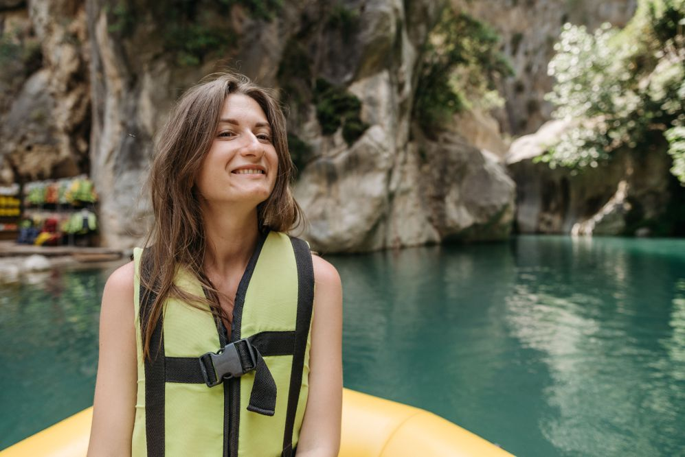

Oferecer experiências de rafting seguras e emocionantes, conectando pessoas à natureza por meio de aventura, diversão e desafios. Proporcionar momentos inesquecíveis através do rafting, com segurança, qualidade e respeito ao meio ambiente.